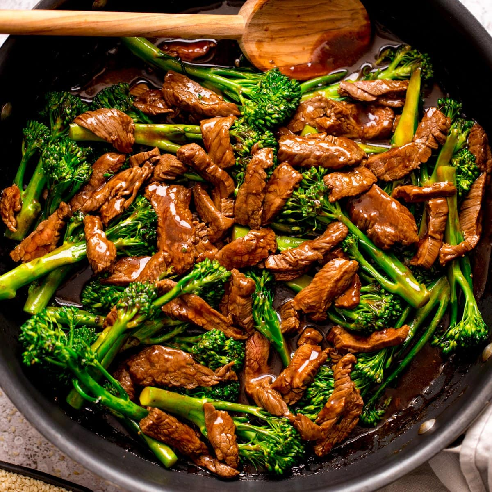

Beef and Broccoli

Description
Beef and Broccoli is a beloved Chinese-American dish that combines tender slices of beef with crisp broccoli florets in a savory sauce. This quick and easy stir fry is perfect for busy weeknights, offering a balance of protein and vegetables in a flavorful meal.
The beef is typically marinated to ensure it stays juicy and absorbs the flavors of the sauce, while the broccoli is cooked until just tender-crisp, maintaining its vibrant green color and nutritional value.
Ingredients
- 1 pound flank steak, sliced thinly against the grain
- 4 cups broccoli florets
- 2 tablespoons vegetable oil
- 1 tablespoon ginger, minced
- 1/4 cup soy sauce
- 2 tablespoons brown sugar
- 1 tablespoon cornstarch
- 1/4 cup water
- 1 tablespoon sesame oil
Steps
- In a small bowl, whisk together soy sauce, brown sugar, cornstarch, water, and sesame oil to make the sauce. Set aside.
- Heat 1 tablespoon of vegetable oil in a large wok or skillet over high heat.
- Add the sliced beef to the hot pan and stir fry for 2-3 minutes until browned. Remove the beef from the pan and set aside.
- In the same pan, add the remaining tablespoon of oil. Add minced garlic and ginger, stir frying for about 30 seconds until fragrant.
- Add the broccoli florets to the pan and stir fry for 3-4 minutes until they turn bright green and are slightly tender.
- Return the beef to the pan with the broccoli.
- Pour the prepared sauce over the beef and broccoli, stirring to coat evenly.
- Cook for an additional 1-2 minutes, stirring constantly, until the sauce thickens and everything is well combined.
- Remove from heat and serve hot over steamed rice.